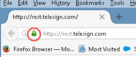
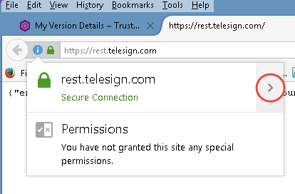
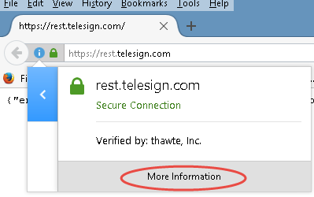
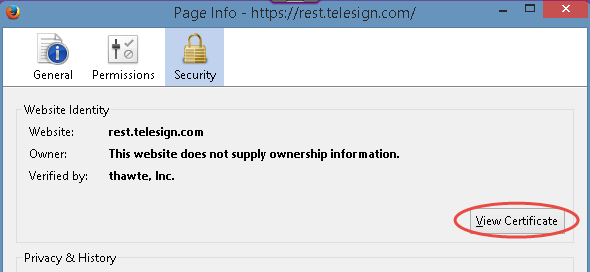
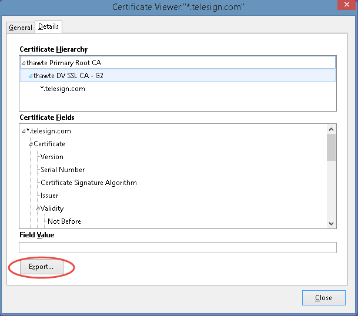

|
IdentityGuard Server 12.0 Administration Guide |
|
IdentityGuard Server 12.0 Administration Guide |
Use the following procedure to import and install the SSL certificate from the third-party service provider that you are using for your voice or text messaging service.
Note: This procedure uses the Mozilla Firefox browser. Steps may vary with other browsers.
To import third-party SSL certificates using Mozilla Firefox
1. Open a Mozilla Firefox browser window and go to the site for your SMS service provider.
● For Authentify, navigate to https://imp.authentify.com/s2s/default.asp.
● For Clickatell, navigate to https://api.clickatell.com/rest/message.
● For TeleSign, navigate to https://rest.telesign.com/.
Note: Your SMS service provider URL may be different. Use the URL assigned when you subscribed to the application.
2. Click the lock icon in the browser address bar.

3. On the drop-down text box that appears, click the right-pointing arrow (>).

4. Click More Information.

5. On the Page Information page, click View Certificate.

6. On the Certificate Viewer window, click the Details tab.
7. Click Export.

8. In the Save Certificate To File dialog box, navigate to a location to save the certificate, and then click Save.
9. Close all open dialogs and browser pages.
10. Copy the certificate to each Entrust IdentityGuard server that needs to use the third-party application.
11. Using the ,
12. Install the certificate into the key store on each Entrust IdentityGuard server that needs to use the third-party application. Use one of the following procedures:
● If your installation uses the embedded Tomcat Java application server, you can use the Key Store Management interface to do this. See Import a trusted certificate.
● If your installation uses the WebSphere or WebLogic, use the keytool-based procedure or another key store management capability. See Install an SSL certificate in the key store using keytool.